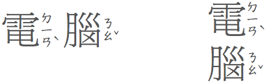

Positioning ruby relative to the base text
The property ruby-position allows you to indicate where ruby text should appear relative to the base
text.
ruby-position can have the following values: over, under, and inter-character. You would apply this style to the ruby element. We will also mention, in this section, how to make the ruby text appear inline after the ruby base.
Positioning ruby text 'over' the base
By 'over' we mean above horizontal text and to the right of vertical CJK text.
This is the default behavior, and you can expect browsers to produce this without CSS.
If you need to place the ruby explicitly in this position, use:
ruby { ruby-position: over; }
To position the ruby text below horizontal base text or to the left of vertical text, use ruby-position: under.
Positioning ruby text 'under' the base
By 'under' we mean below horizontal text and to the left of vertical CJK text.
This position is often used in Japanese for semantic information (as opposed to phonetic labelling). It is also used sometimes for pinyin annotations in Chinese. Here is an example from the moedict dictionary.

To produce this effect, use:
ruby { ruby-position: under; }
Positioning bopomofo ruby
In Traditional Chinese, bopomofo (zhuyin fuhao) ruby appears to the right of the base character, whether the text is set horizontally or vertically. Furthermore, the bopomofo annotation is always set vertically and the tone marks (apart from the light tone) are moved into an additional column to the right of the bopomofo characters.

The vertical placement for the bopomofo and the relative position of the tone characters within the invisible box to the right of the Han base character relies on the browser, and possibly font information. You don't need to specify anything in CSS.
What you do have to do in CSS, however, is indicate that this will be bopomofo ruby, so that the annotation doesn't appear 'over' or 'under' the base text. To do that, you need the inter-character value of ruby-position.
ruby { ruby-position: inter-character; }
Positioning for double-sided ruby
Actually, the Traditional Chinese example above from the moedict dictionary attaches two types of ruby to each base character: bopomofo and pinyin. In this case you need to be specific about which bit of ruby text needs to appear where. This is complicated a little because there are two possible ways to create markup for double-sided ruby (see the Ruby Markup article for more details).
If you use the 'tabular' model of markup the styling is reasonably straightforward, and involves setting ruby-position on the appropriate rtc element. Given markup such as the following:
<ruby>
<rb>電<rb>腦
<rtc><rt>ㄉㄧㄢˋ<rt>diàn</rt></rtc>
<rtc>
<rt>ㄋㄠˇ<rt>nǎo</rt></rtc>
</ruby>
you could use CSS like this:
ruby { ruby-position: inter-character; }
rtc + rtc { ruby-position: under; }
If you use nested markup, and you have markup such as the following:
<ruby>
<ruby>電<rt>ㄉㄧㄢˋ</rt></ruby><rt>diàn</rt>
<ruby>腦<rt>ㄋㄠˇ</rt></ruby><rt>nǎo</rt>
</ruby>
If you use nested markup, it is probably easier if you use an approach such as the following:
ruby + rt { ruby-position: under; }
ruby > ruby > rt { ruby-position: inter-character; }
Rendering ruby text inline
In some situations you may want the ruby text to appear inline, after the base text. For example, the Ruby markup article describes accessibility requirements. In other cases you may want to do this because the user interface is too small for legible
The vertical placement for the bopomofo and the relative position of the tone characters within the invisiblotation doesn't appear 'over' or 'under' the base text. To do that, you need the inter-character value of ruby-position.
ruby { ruby-position: inter-character; }
If you want to force the ruby text to appear inline you would use ruby-position: inline. Note that due to an error this
is not explained in the current version of the CSS3 Ruby specification.

The parentheses in the illustration above need to be provided in the rp markup.